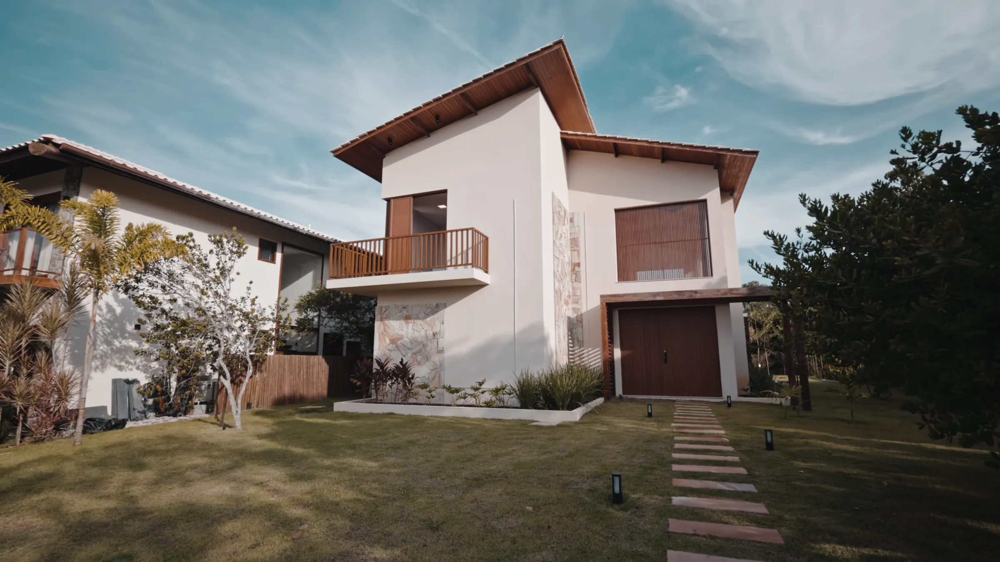
Casas escolhidas
uma a uma.
Em destaque: Casa Vento SulAlto da Figueira · 380 m² · 4 suítes · jardim que desce até a rua.
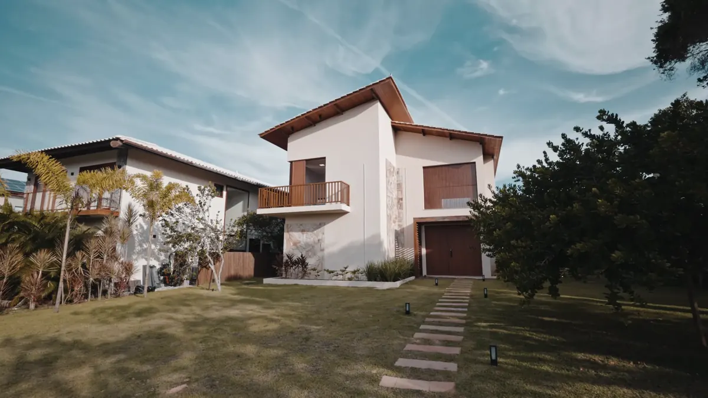
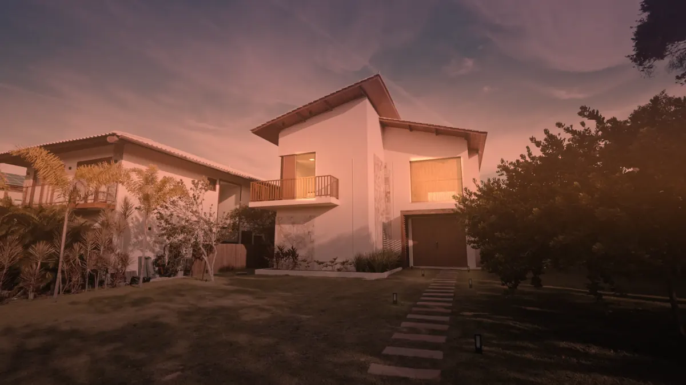
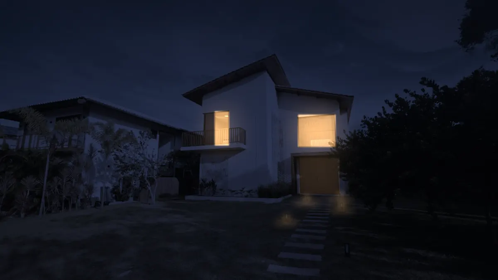
Um dia na casa
05:10Alto da Figueira · São Paulo
Chegue.A casa ainda acesa, o jardim em silêncio.
Entre.A primeira luz desenha a fachada.
Fique.O dia começa no jardim.
(01) Método
Apresento poucas propriedades, mas conheço cada uma por dentro: como a luz entra de manhã, onde a sombra cai à tarde e como a casa soa à noite.
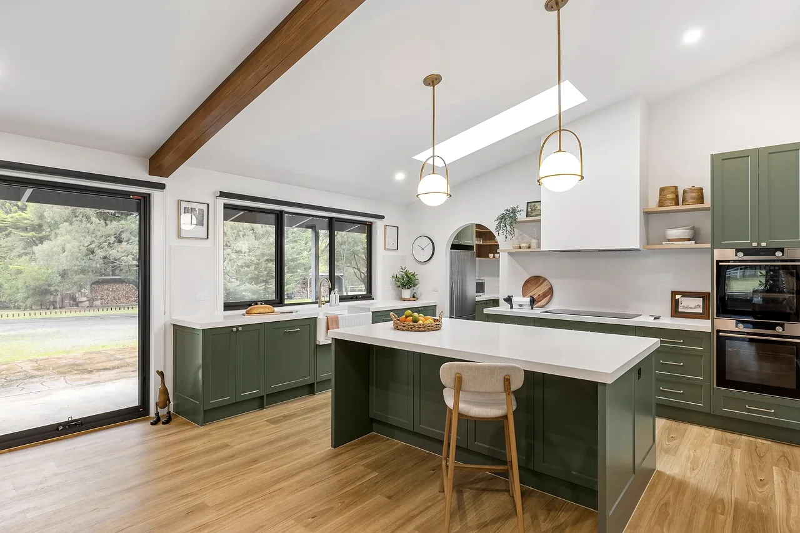
Cada imóvel da coleção foi visitado em horários diferentes do dia, fotografado e filmado antes de ser apresentado. Nada entra na lista sem essa visita.
— Helena
- 12anos
- de mercado em São Paulo
- 140
- famílias atendidas
- 38dias
- prazo médio entre visita e proposta
- 5
- imóveis por vez, nunca mais
O que acompanha cada imóvel
Visita em três horários
Manhã, tarde e noite: você vê como a luz entra e como a casa soa antes de decidir.
Dossiê completo
Planta técnica, documentação, custos e histórico do bairro, organizados antes da primeira visita.
Da proposta à chave
Acompanho a negociação, a vistoria e a entrega. Uma única pessoa, do começo ao fim.
(02) Coleção
Cinco propriedades.
Casas e apartamentos entre R$ 1,35 mi e R$ 3,2 mi, todos visitados antes de entrar aqui.
Prefere comparar lado a lado?
Por dentro
01 / 04
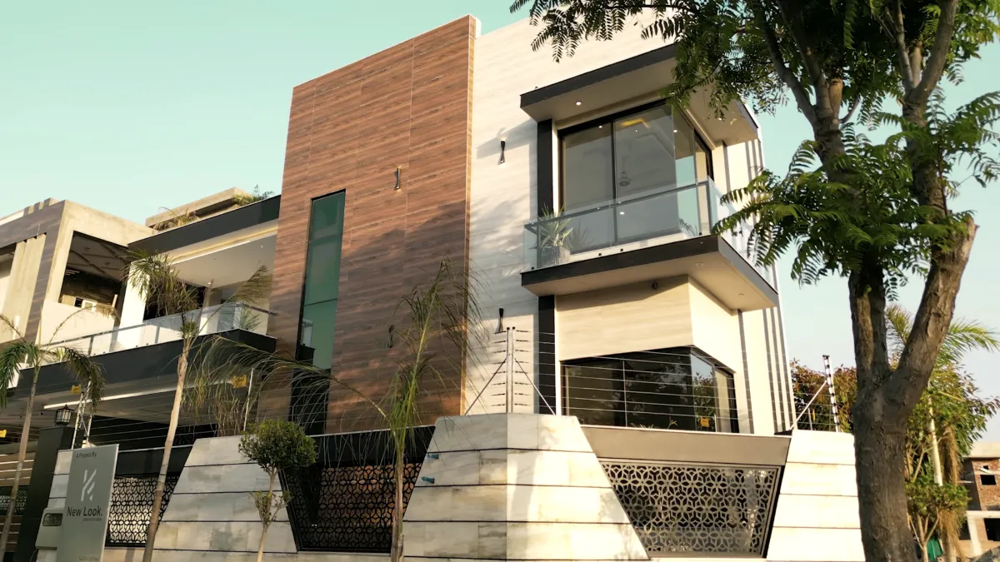
Vista do alto.
Torre Ipê · Centro Velho
Role para abrir o filme
Filme aéreo
Varandas de vidro, pedra clara e brises escuros: a Torre Ipê vista como ninguém a vê da rua.
Ver a Torre Ipê →(03) Filmes
Quatro horas do dia.
Passe o mouse (ou toque) para ver cada casa em movimento, na hora em que ela é melhor.
(04) Álbum
Os detalhes que ficam.
(05) Comprar e vender
Poucas opções, todas visitadas.
Para quem compra
- 01ConversaEntendo como você vive, trabalha e recebe antes de falar de metragem.
- 02SeleçãoMostro de três a cinco imóveis. Nunca cinquenta.
- 03VisitasVocê visita em horários diferentes para ver a luz e ouvir a rua.
- 04PropostaNegociação, documentação e chaves, com a mesma pessoa do início ao fim.
Para quem vende
- 01AvaliaçãoVisita técnica e preço baseado em vendas reais da região.
- 02FotografiaFoto, vídeo e maquete 3D, feitos no melhor horário da casa.
- 03Público certoApresentação direta a compradores qualificados, sem portais genéricos.
- 04VendaPrazo médio de 38 dias entre a primeira visita e a proposta aceita.
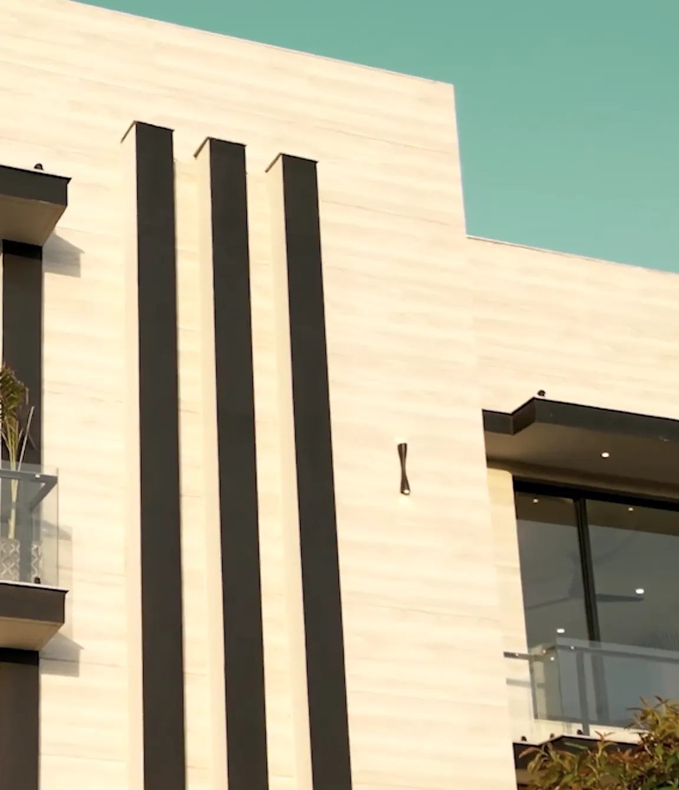
(06) Onde atuo
Cinco bairros, conhecidos a pé.
(07) Ensaio
A casa em foco.
Role devagar: cada foto ganha foco no meio da tela e se desfaz nas bordas, como o olhar numa visita.
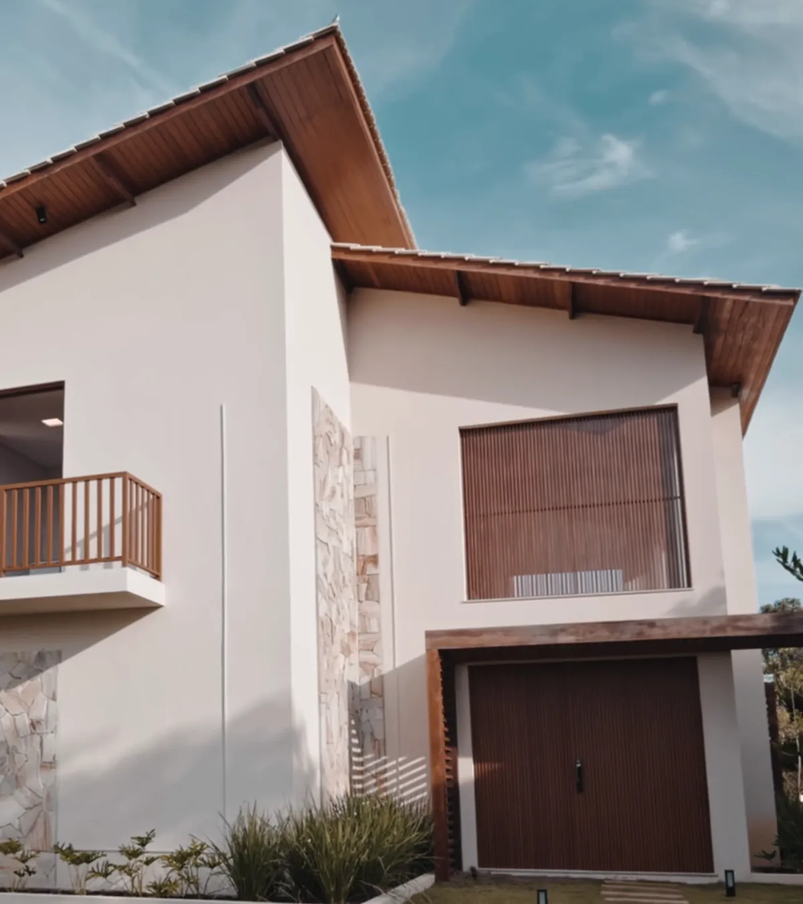
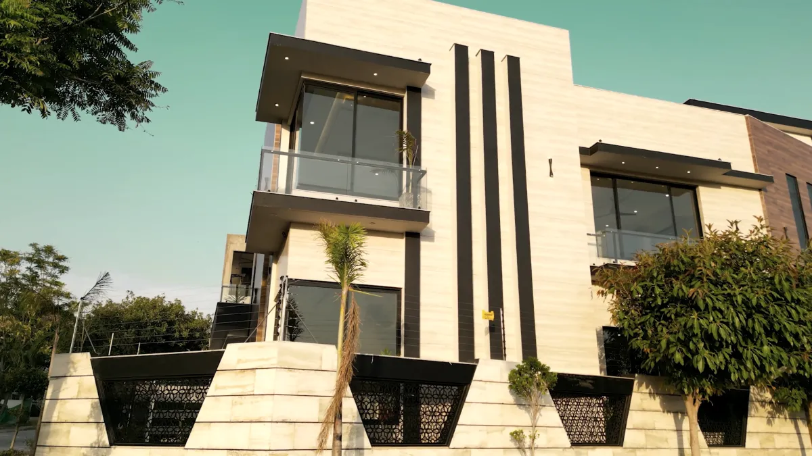
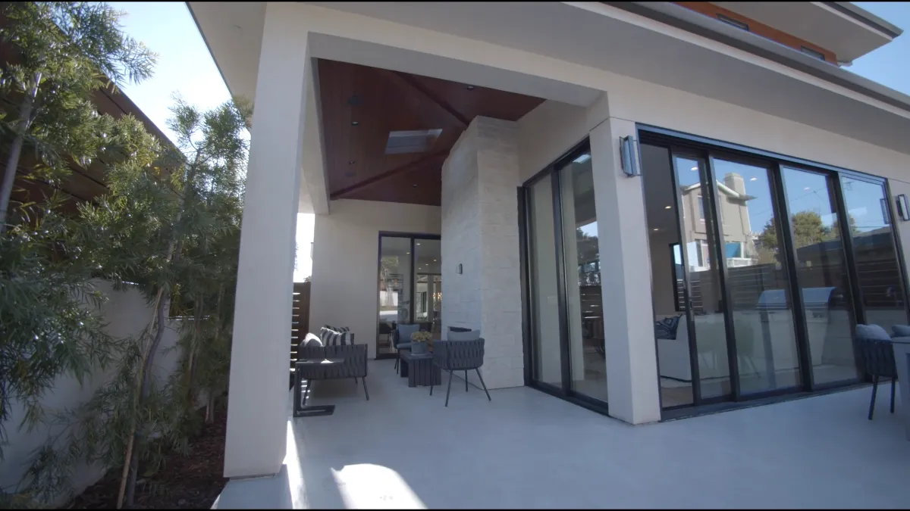
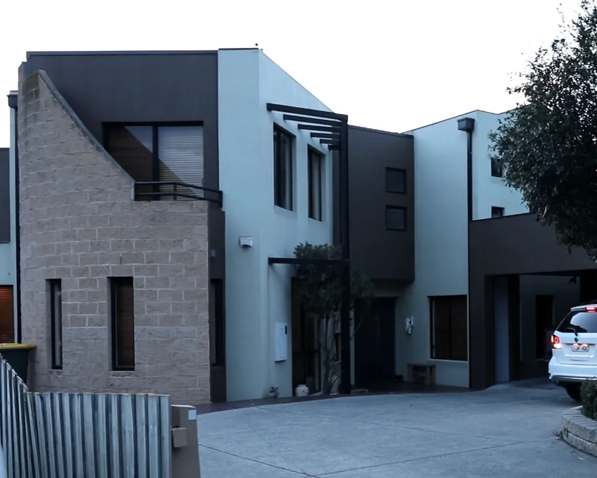
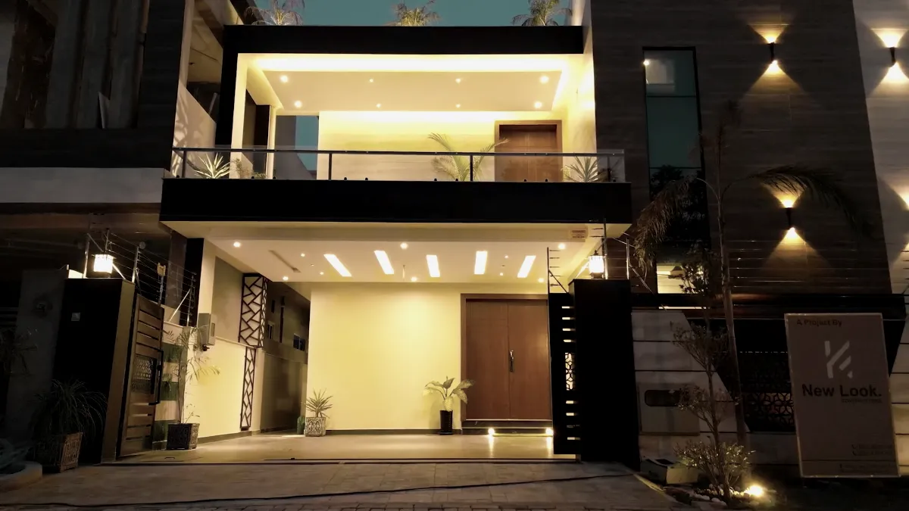
(08) Sobre
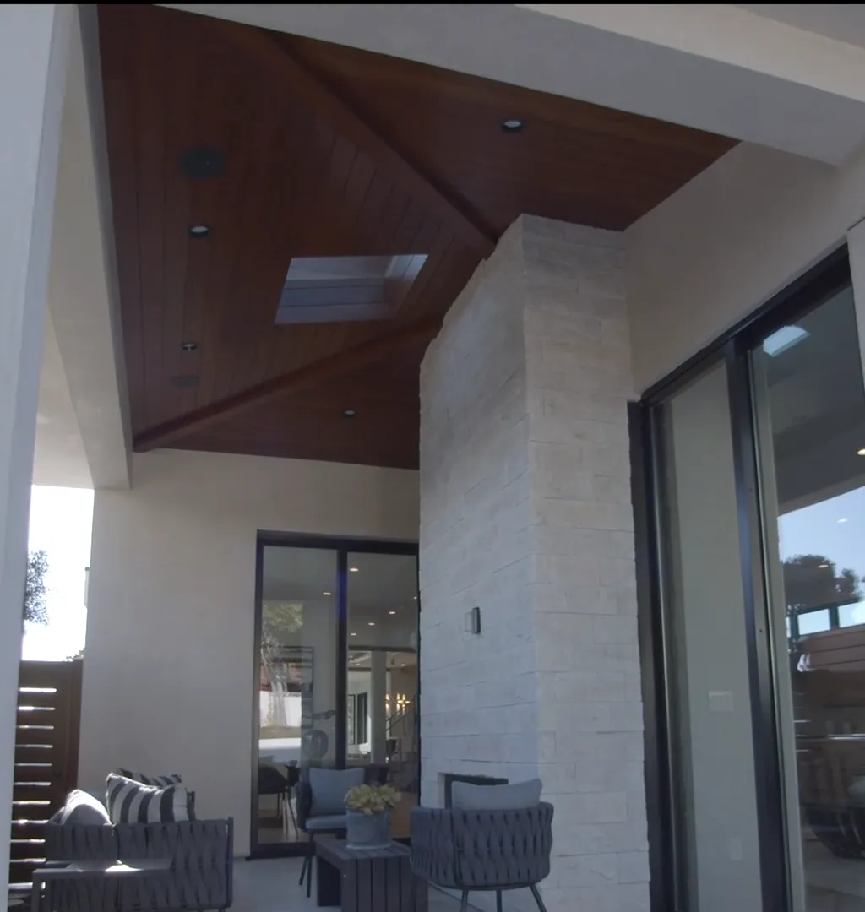
Helena Aragão
Corretora há doze anos, com formação em arquitetura.
Trabalho com poucos imóveis por vez para poder estar presente em cada visita, cada proposta e cada chave entregue. Antes de apresentar uma casa, volto a ela de manhã, à tarde e à noite.
- Registro
- CRECI 000000-F (exemplo)
- Formação
- Arquitetura e Urbanismo
- Atendimento
- Seg a sáb, com hora marcada
- Região
- São Paulo, zona oeste e centro
(09) Vozes
Quem já entrou em casa.
Ela me levou à casa três vezes, em horários diferentes. Na terceira eu já sabia que era ali.
Vendemos em 41 dias, sem fila de curiosos. Só quem realmente queria a casa veio visitar.
O dossiê veio pronto. Não precisei correr atrás de nenhum papel.
Depoimentos de exemplo, para demonstração do layout.
Perguntas frequentes
Quanto tempo leva entre a visita e a proposta?
Em média 38 dias. Cada caso é diferente: o que combinamos na primeira conversa define o ritmo.
Posso visitar à noite?
Sim. Recomendo ver cada casa em dois ou três horários. Agende pela página do imóvel e escolha o período.
Vocês cobram para avaliar o meu imóvel?
A primeira avaliação é uma conversa sem custo, com visita ao imóvel e uma proposta de preço justificada.
Atendem fora de São Paulo?
O foco é a zona oeste e o centro de São Paulo. Para outras regiões, indico parceiros de confiança.
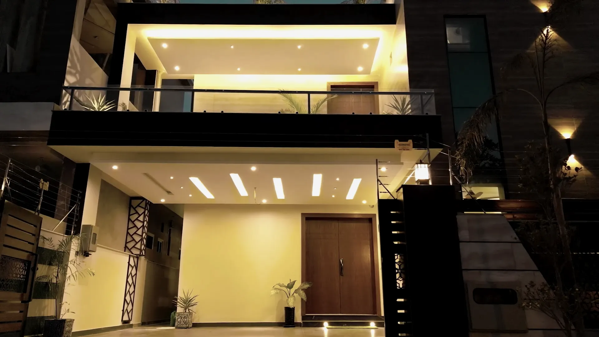
(10) Contato
Venha conhecer um lugar.
- contato@helena.example
- Telefone
- (00) 00000-0000
- Atendimento
- Seg a sáb, 9h às 19h